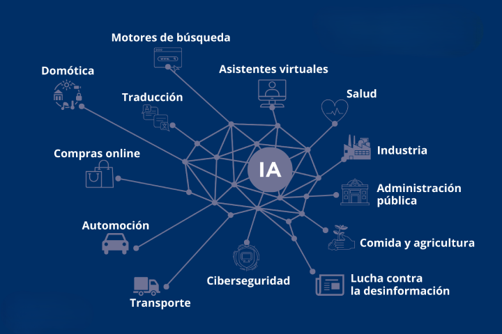
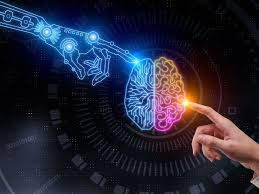

Qué es la IA?
La inteligencia artificial es un campo técnico y científico dedicado al sistema de ingeniería que genera resultados como contenido, previsiones, recomendaciones o decisiones para un conjunto determinado de objetivos definidos por el ser humano La IA puede llegar a ser increíble a la hora de realizar una tarea específica, pero requiere muchísimos datos y repeticiones. Simplemente, aprende a analizar grandes cantidades de datos, reconocer patrones y hacer predicciones o tomar decisiones en base a los datos, y mejora continuamente su desempeño con el tiempo. Hoy en día, este significado de IA ha evolucionado más allá del mero procesamiento de datos para incluir el desarrollo de máquinas capaces de aprender, razonar y resolver problemas. El aprendizaje automático se ha vuelto muy competente en la generación de todo tipo de cosas, desde códigos de software hasta imágenes, artículos, videos y música. Es el siguiente nivel de la IA, la llamada IA generativa, que difiere de la IA tradicional en cuanto a sus capacidades y aplicaciones. Mientras que los sistemas de IA tradicionales se utilizan principalmente para analizar datos y hacer predicciones, la IA generativa va un paso más allá y crea nuevos datos similares a sus datos de entrenamiento.

Como funciona?
Básicamente, la IA analiza datos para extraer patrones y hacer predicciones. Lo hace combinando grandes conjuntos de datos con algoritmos inteligentes de IA (o conjuntos de reglas) que permiten al software aprender de los patrones de los datos. El sistema lo logra mediante una red neuronal, una matriz de nodos interconectados que intercambian información entre diversas capas para buscar conexiones y deducir el significado de los datos.

La IA se utiliza en diversas industrias y campos, como el comercio, la atencion medica, la industria pesada y las plataformas de streaming, los usos mas frecuentes serian:
Automatización de procesos: La inteligencia artificial puede ayudar a las empresas a automatizar tareas repetitivas, lo que permite a los empleados concentrarse en actividades de mayor valor. Un ejemplo de esto es la automatización de procesos en la industria de la fabricación, donde la IA puede ayudar a optimizar la producción y mejorar la eficiencia.
Análisis de datos La IA permite analizar grandes conjuntos de datos, lo que ayuda a las empresas a extraer información valiosa y tomar decisiones informadas. Por ejemplo, utilizar IA en el análisis de datos de marketing para identificar patrones y tendencias, lo que puede ayudar a las empresas a diseñar campañas de marketing más efectivas.
Asistentes virtuales Los asistentes virtuales basados en IA, como Siri, Alexa y Google Assistant, están ganando popularidad. Estos asistentes virtuales pueden responder preguntas, realizar tareas y proporcionar información, lo que los hace útiles tanto para los consumidores como para las empresas.
Crear contenido Con la inteligencia artificial puedes ahorrar tiempo generando imágenes, títulos o texto en general para tu estrategia de marketing. Por ejemplo, el CRM Escala te ofrece IA para generar el contenido de landing pages y también para las campañas de email marketing. Dejando en el pasado esos momentos de página en blanco por horas.
Un par de IAs que debes conocer
Siri:
Siri es un asistente de voz de Apple que utiliza inteligencia artificial para interactuar con los usuarios .Siri se basa en tecnologías como el reconocimiento de voz, el procesamiento de lenguaje natural y el aprendizaje automático, ella esta enfocada en cumplir con las necesidades de busqueda de los usuarios mediante un sistema de busqueda avanzado
Chat gpt:
ChatGPT es un chatbot que utiliza inteligencia artificial (IA) para generar texto y responder preguntas ChatGPT se entrena con grandes cantidades de datos de texto, como libros, artículos, noticias y conversaciones. Esto le permite realizar una gran variedad de tareas relacionadas con el lenguaje natural. Algunas de las aplicaciones de ChatGPT son: Generar texto coherente y natural, Mejorar la precisión de los sistemas de búsqueda, Desarrollar chatbots, Mejorar el procesamiento del lenguaje natural, ChatGPT es una IA muy completa.
Conclusión
La inteligencia artificial se suele ver en muchos repertorios dentro y fuera del mundo digital, existen muchos lugares para aprender de ella y se desarrolla bastante rapido, es recomendable saber cuando se puede llegar a aplicar sin exceder su dependencia a esta misma.